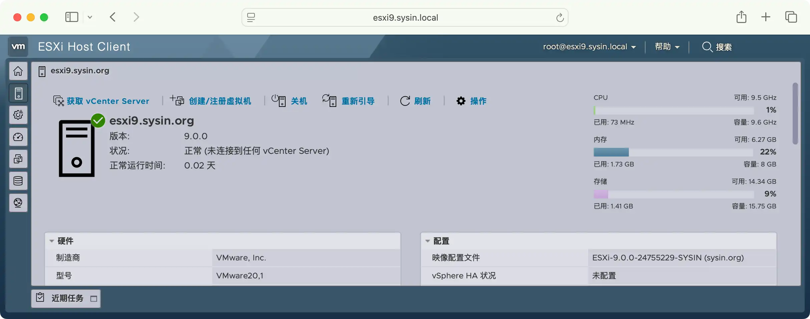
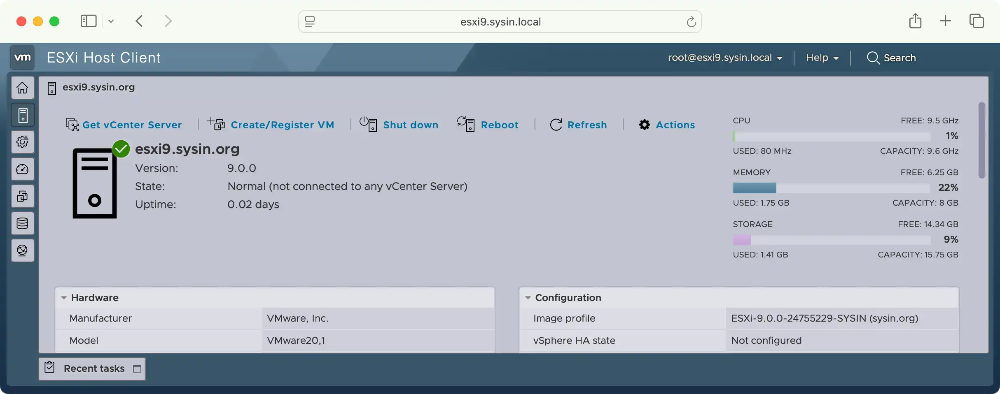

请访问原文链接：VMware ESXi 9.1 macOS Unlocker & OEM BIOS 2.7 集成网卡驱动和 NVMe 驱动 (集成驱动版) 查看最新版。原创作品，转载请保留出处。
作者主页：sysin.org
发布 ESXi 9 集成驱动版，在个人电脑上运行云计算工作负载，构建开发、测试和学习的最佳平台。

通用特性概览
该版本在官方原版基础上新增以下特性：
- macOS Unlocker：来自 GitHub 的 Unlocker 4，现已支持 macOS Tahoe
- OEM BIOS 2.7：使用上游最流行的 OEM BIOS/EFI64，现已支持 Windows Server 2025
- LegacyCPU support，允许在不受支持的旧款 CPU 上安装 ESXi 9.0
- ESX-OSData 卷大小修改为 8GB，解决自 ESXi 7.0 起系统占用磁盘空间过大的问题（超过 142GB）
- 有限支持采用混合架构的第 12 代及以上 Intel 处理器，可实现正常引导和运行
- 中文界面语言支持，在 ESXi 9.0 的 Host Client 中继续支持简体中文界面语言，包括繁体中文
直接运行 macOS Tahoe
ESXi 默认是支持创建 macOS 虚拟机的（不同于 Workstation 默认界面不显示），但该功能仅限于 Apple Mac 硬件上启用。该版本解锁了对 macOS 虚拟化的支持，在任意非 Mac 硬件上可以直接运行 macOS 虚拟机。
⚠️ macOS 虚拟机与 Mac 上的 macOS 体验有天壤之别，仅用于体验而已。开启 macOS 卓越性能的唯一平台是搭载 Apple M 芯片的 Mac。尽早加入 Apple 阵营，开启卓越体验吧。
直接新建虚拟机，操作系统选择 “Apple macOS 12 (64-bit)”，即可安装和正常启动：

ESXi 9.1 中 “Apple macOS” 虚拟机选项已经移动到了 Other 中，没有单独列出。
💡：macOS Tahoe 采用全新的 Liquid Glass 设计，对虚拟化硬件要求较高。
虚拟化中的 macOS Tahoe：

附：
- macOS Tahoe 26.5.2 (25F84) Boot ISO 原版可引导映像下载
- macOS Sequoia 15.7.7 (24G720) Boot ISO 原版可引导映像下载
- macOS Sonoma 14.8.7 (23J520) Boot ISO 原版可引导映像下载
- 更多：macOS 下载汇总 (系统、应用和教程)
参看：macOS 26 Blank OVF - macOS Tahoe 虚拟化解决方案
VMware Dell 2.7 BIOS EFI64 ROM
💡 特别提示：这里的 OEM BIOS 是软件技术，并非硬件的 BIOS，可适用于任何品牌的计算机，以及任意兼容机。标题中的 Dell 只是采用了最流行的 Dell 产品技术方案。
来自上游最新的 OEM BIOS/EFI64，现已更新支持 Windows Server 2025。
BIOS.440 & EFI64 - Dell 2.7 OEM BIOS: NT 6.0 (Vista/Server 2008), NT 6.1 (7/Server 2008 R2), NT 6.2 (Server 2012), NT 6.3 (Server 2012 R2), NT 10.0 (Server 2016/Server 2019/Server 2022/Server 2025)
Windows Server OVF 系列：
- Windows Server 2025 OVF (2026 年 6 月更新) - VMware 虚拟机模板
- Windows Server 2022 OVF (2026 年 6 月更新) - VMware 虚拟机模板
- Windows Server 2019 OVF (2026 年 6 月更新) - VMware 虚拟机模板
- Windows Server 2016 OVF (2026 年 6 月更新) - VMware 虚拟机模板
- Windows Server 2008 R2 OVF (2025 年 10 月更新) - VMware 虚拟机模板
其他 OVF，如：Rocky Linux 10 x86_64 OVF (sysin) - VMware 虚拟机模板，Ubuntu 26.04 LTS x86_64 OVF (sysin) - VMware 虚拟机模板，更多请在本站搜索 “OVF”。
支持不受官方支持的旧款 CPU
ESXi 9.0 同样废弃了对部分旧款 CPU 的支持，笔者根据相关文档判断以下 CPU 将不受 ESXi 9.0 支持：
Intel
- Xeon D‑1500 Series
- Xeon E3‑1200‑V5 / E3‑1500‑V5 Series
- Xeon E5‑2600‑V4 / E5‑1600‑V4 Series
- Xeon E5‑4600‑V4 Series
- Xeon E7‑8800/4800‑V4 Series
- Xeon E3‑1200‑V6 Series
- Intel Xeon Platinum 8100 / Gold 6100/5100 / Silver 4100 / Bronze 3100 Series
- Xeon D‑2100 Series
- Xeon W‑2100 Series
AMD
- Bulldozer 架构（如 Opteron 6200/4200/3200）
- Piledriver 架构（如 Opteron 4300/6300 系列）
- Steamroller 架构（如 Opteron X2250/X1250 Berlin）
- Kyoto 架构（如 Opteron X1100/X2100）
ESXi 8.0 同样废弃了对部分旧款 CPU 的支持，以下 CPU 将不受 ESXi 8.0 支持：
- Intel Family 6, Model = 2A (Sandy Bridge DT/EN, GA 2011)
- Intel Family 6, Model = 2D (Sandy Bridge EP, GA 2012)
- Intel Family 6, Model = 3A (Ivy Bridge DT/EN, GA 2012)
- AMD Family 0x15, Model = 01 (Bulldozer, GA 2012)
vSphere 7.0 Update 2 及更高版本中 ESX 安装程序显示的如下警告消息已经明示：
CPU_SUPPORT_WARNING: The CPUs in this host may not be supported in future ESXi releases. Please plan accordingly.
修改启动参数，在官方不受支持的 CPU 的服务器上可以正常安装。
根据 VMware vSphere 7.0 Release Notes，以下 CPU 已经不受支持（无法安装或者升级 ESXi 7.0）
Comparing the processors supported by vSphere 6.7, vSphere 7.0 no longer supports the following processors:
- Intel Family 6, Model = 2C (Westmere-EP)
- Intel Family 6, Model = 2F (Westmere-EX)
笔者在一台 2010 年发布的服务器上安装运行良好 (sysin)：HP DL 380 G7，Intel® Xeon® CPU E5606

备注：本截图为 7.0 版本
ESX-OSData 卷大小修改为 8GB

相比 ESXi 9.0 一目了然的 VMFSL 图示界面，ESXi 9.1 的 Host Client 展示方式显得不够直观。
{kind=link}
ESXi 9.0 对存储容量的要求未有明显变更，以下 ESXi 8.0 的描述基本适用。
⚠️ 在 ESXi 8.0 中建议放弃使用 USB/SD 卡作为系统存储介质（虽然 SD 卡和 USB 介质继续获得有限支持，详见 KB85685）。
从 ESXi 7.0 开始，对磁盘空间的要求有所变化：
- 8GB SD 卡 + 32GB 本地磁盘
- 32GB 本地磁盘
- 142G 或者更大的本地磁盘
通常我们在一块数百 GB 或者更大的本地磁盘上安装 ESXi，系统分区磁盘空间将占用 142GB 以上，整个系统分区（内核参数：systemMediaSize）需要 138GB 和 4GB 以上的空闲空间，其中 ESX-OSData volume 大约需要 120GB 的磁盘空间，对于磁盘空间紧张情况下可能有一定的浪费 (sysin)。修改后，系统安装后占用的磁盘空间不超过 16GB（特别是针对个人实验，无需浪费过多存储容量）。
图：vSphere 7 中的新分区架构，只有系统引导分区固定为 100 MB，其余分区是动态的，这意味着分区大小将根据启动媒体大小确定。

从 vSphere 7.0 Update 1c 开始，您可以使用 ESXi 安装程序引导选项 systemMediaSize 限制启动媒体上系统存储分区的大小。如果您的系统占用空间较小，不需要最大 128 GB 的系统存储大小，您可以将其限制为最小 32 GB。systemMediaSize 参数接受以下值：
- min（32 GB，用于单磁盘或嵌入式服务器）
- small（64 GB，用于至少有 512 GB RAM 的服务器）
- default（128 GB）
- max（消耗所有可用空间，用于多 TB 的服务器）
即使设置值为 min，相比之前的版本所需存储容量还是要大的多。
有限支持第 12 代及以上 Intel 处理器
ESXi 面向数据中心虚拟化，在测试和学习时也常常将其运行于桌面 PC 之上。
据悉 ESXi 8.0 并不支持第 12 代 Intel 处理器，直接引导会出现 PSOD。本次通过加载内核参数可以有限支持第 12 代 Intel CPU，即可以正常引导和安装，也可以正常运行 (sysin)，但是无法区分或识别两种核心，P 核的超线程是无法识别的，比如 i7-12650H 配备 6P + 4E 在桌面系统中显示为 16 核心，而在 ESXi 中仅识别为 10 核。现在有了更好的解决方案，绝大多数主流品牌机和主板都可以通过配置开启 P 核的超线程（非主流请慎选）。
已经广泛验证支持第 12 代及以上 Intel 处理器（目前 13、14 代同样支持），更多案例，期待您的反馈。
第 12 代英特尔酷睿桌面级处理器有 N 个性能核（P 核，Performance-core）和 N 个能效核（E 核，Efficient-core）组成，性能核和能效核的混合架构，是 12 代酷睿处理器最大的革新。该架构或俗称 PE 大小核。
第 12 代及以上 Intel CPU 已经成功安装 ESXi 后需要进一步配置，可联系笔者了解详情。
⚠️：并不推荐此类 CPU，无法有效利用全部计算资源。
💡：仅标准版和集成驱动版提供此项特性，品牌服务器于此无关。
可选简体和繁体中文界面语言支持
重要提示：9.1 开始使用新版 VMware Host Client，不推荐使用中文语言界面。
官方弃用了对中文界面语言的支持，本定制版在 ESXi 9.0 的 Host Client 中继续支持简体中文界面语言，包括繁体中文。

图：ESXi 9 简体中文界面和映像配置文件
图：ESXi 9 繁体中文界面和映像配置文件
💡：此项不推荐，单机工作正常，但是与 VVF 或者 VCF 组件协同尚未验证，在未来的 Update 版本中可能无法支持，应尽快适应官方版本的变化。
💡：仅集成驱动版提供此项特性（仅通用版本，特殊定制版暂不提供），品牌服务器无需在意。
默认为仅支持 English，French，Spanish，Japanese 四种界面语言。

图：ESXi 9 默认英文界面和映像配置文件
集成的驱动
新增网卡兼容性
2025 年 11 月 13 日，新增 Realtek 网卡（RTL8111 / RTL8125 / RTL8126 / RTL8127）支持，参看下方 “Realtek 网卡兼容性” 章节。
✅ USB Network Native Driver: 该项目名为 USB 网络原生驱动，支持以下芯片和 ID 的网卡。
2025 年 6 月 17 日发布的 USB Network Native Driver 兼容 ESXi 9.0。
USB Network Native Driver for ESXi (sysin) version 1.15 - Jun 17, 2025
Any adapters using the following chipsets and with the following VID/PID are supported.
| Vendor | Chipset | Speed | VendorID | DeviceID |
|---|---|---|---|---|
| AQUANTIA | AQC111U | 5G, 2.5G, 1G, 100M | 0xe05a | 0x20f4 |
| AQUANTIA | Aquantia Pacific | Unknown | 0x2eca | 0xc101 |
| ASIX | AX88179 | 10/100/1000M | 0x0b95 | 0x1790 |
| ASIX | AX88178a | 10/100/1000M | 0x0b95 | 0x178a |
| CISCO LINKSYS | RTL8153 | 10/100/1000M | 0x13b1 | 0x0041 |
| DLINK | RTL8156 | 2.5G, 1G, 100M, 10M | 0x2001 | 0xb301 |
| DLINK | AX88179 | 10/100/1000M | 0x2001 | 0x4a00 |
| INSYDE SOFTWARE CORP | Insyde Software Corp. | Unknown | 0x0b1f | 0x03ee |
| LENOVO | RTL8153 | 10/100/1000M | 0x17ef | 0x3062 |
| LENOVO | RTL8153 | 10/100/1000M | 0x17ef | 0x3069 |
| LENOVO | RTL8153 | 10/100/1000M | 0x17ef | 0x720a |
| LENOVO | AX88179 | 10/100/1000M | 0x17ef | 0x304b |
| LENOVO | RTL8153 | 10/100/1000M | 0x17ef | 0x7205 |
| NVIDIA | RTL8153 | 10/100/1000M | 0x0955 | 0x09ff |
| Qualcomm | NA | Unknown | 0x1A56 | 0x3100 |
| Qualcomm | NA | Unknown | 0x0b05 | 0x1976 |
| REALTEK | RTL8152 | 10/100M | 0x0bda | 0x8152 |
| REALTEK | RTL8153 | 10/100/1000M | 0x045e | 0x07c6 |
| REALTEK | RTL8153 | 10/100/1000M | 0x0bda | 0x8153 |
| REALTEK | RTL8156 | 2.5G, 1G, 100M, 10M | 0x0bda | 0x8156 |
| REALTEK | RTL8156B(G) | 2.5G, 1G, 100M, 10M | 0x0bda | 0x8156 |
| REALTEK | RTL8157 | 5G, 2.5G, 1G, 100M | 0x0bda | 0x8157 |
| SITECOMEU | AX88179 | 10/100/1000M | 0x0df6 | 0x0072 |
| SUPERMICRO | Supermicro computer Inc | Unknown | 0x15d9 | 0x1b83 |
| TP-LINK | RTL8153 | 10/100/1000M | 0x2357 | 0x0601 |
| TRENDNET | AQC111U | 5G, 2.5G, 1G, 100M | 0xe05a | 0x20f4 |
✅ ESXi 9.0 新增支持的网卡列表，9.0 GA 版本发布时列表如下。
| Vendor | Product | Type | Compatibility |
|---|---|---|---|
| Beijing Wangxun Technology Co.,Ltd. | RP2000 series | Network | ESXi 9.0 |
| Emulex | Emulex LPe37100S/LPe38100S Fibre Channel Adapter | Network | ESXi 9.0 |
| Pensando Systems Inc | DSC2-200 50/100/200G 2-port 32G RAM 64G eMMC G2 DPU R2 | Network | ESXi 9.0 |
| Pensando Systems Inc | DSC2-200 50/100/200G 2-port 32G RAM 64G eMMC G2 DPU | Network | ESXi 9.0 |
| Pensando Systems Inc | DSC2-200 50/100/200G 2-port 32G RAM 64G eMMC G2 DPU R3 | Network | ESXi 9.0 |
| Pensando Systems Inc | DSC2-200 50/100/200G 2-port 32G RAM 64G eMMC G2 DPU R4 | Network | ESXi 9.0 |
| Pensando Systems Inc | DSC2-200 50/100/200G 2-port 32G RAM 64G eMMC G2 DPU R5 | Network | ESXi 9.0 |
| Pensando Systems Inc | DSC2A-200 50/100/200G 2-port 32G RAM 64G eMMC G2 Services Card, Management Controller | Network | ESXi 9.0 |
| Pensando Systems Inc | DSC2A-200 50/100/200G 2-port 32G RAM 64G eMMC G2 Services Card, Management Controller | Network | ESXi 9.0 |
上表中 Emulex 似乎为 FC 卡，9.0 GA 发布时官方列表如此。
✅ 新增的 Intel 网卡支持：此项非此版本新增，例行列出。
Community Networking Driver 项目中的驱动已经获得 ESXi 的官方支持。
- icg: Any PCIe network adapters with VID/PID listed below are supported in ESXi 8.0 and newer (sysin)
| Vendor | Chipset | VendorID | DeviceID |
|---|---|---|---|
| Intel | Ethernet Controller I225-LM | 0x8086 | 0x15f2 |
| Intel | Ethernet Controller I225-V | 0x8086 | 0x15f3 |
| Intel | Ethernet Controller I225(blankNVM) | 0x8086 | 0x15fd |
| Intel | Ethernet Controller I225-IT(2) | 0x8086 | 0x0d9f |
| Intel | Ethernet Controller I225-I | 0x8086 | 0x15f8 |
| Intel | Ethernet Controller I225-K | 0x8086 | 0x3100 |
| Intel | Ethernet Controller I225-K(2) | 0x8086 | 0x3101 |
| Intel | Ethernet Controller I225-LMvP(2) | 0x8086 | 0x5502 |
| Intel | Ethernet Controller I226-LMvP(2) | 0x8086 | 0x5503 |
| Intel | Ethernet Controller I226-K | 0x8086 | 0x5504 |
| Intel | Ethernet Controller I226-LM | 0x8086 | 0x125b |
| Intel | Ethernet Controller I226-V | 0x8086 | 0x125c |
| Intel | Ethernet Controller I226-IT | 0x8086 | 0x125d |
| Intel | Ethernet Controller I226(blankNVM) | 0x8086 | 0x125f |
| Intel | Ethernet Controller I220-V | 0x8086 | 0x15f7 |
| Intel | Ethernet Controller I221-V | 0x8086 | 0x125e |
- e1000: 8.0 U3 更新又带来了多款新的型号支持。
| Vendor | Chipset | VendorID | DeviceID | Note |
|---|---|---|---|---|
| Intel | Ethernet Connection (8) I219-LM | 0x8086 | 0x15df | |
| Intel | Ethernet Connection (8) I219-V | 0x8086 | 0x15e0 | |
| Intel | Ethernet Connection (9) I219-LM | 0x8086 | 0x15e1 | |
| Intel | Ethernet Connection (9) I219-V | 0x8086 | 0x15e2 | |
| Intel | Ethernet Connection (10) I219-LM | 0x8086 | 0x0d4e | |
| Intel | Ethernet Connection (10) I219-V | 0x8086 | 0x0d4f | |
| Intel | Ethernet Connection (11) I219-LM | 0x8086 | 0x0d4c | |
| Intel | Ethernet Connection (11) I219-V | 0x8086 | 0x0d4d | |
| Intel | Ethernet Connection (12) I219-LM | 0x8086 | 0x0d53 | |
| Intel | Ethernet Connection (12) I219-V | 0x8086 | 0x0d55 | |
| Intel | Ethernet Connection (13) I219-LM | 0x8086 | 0x155b | |
| Intel | Ethernet Connection (13) I219-V | 0x8086 | 0x155c | |
| Intel | Ethernet Connection (14) I219-LM | 0x8086 | 0x15f9 | |
| Intel | Ethernet Connection (14) I219-V | 0x8086 | 0x15fa | |
| Intel | Ethernet Connection (15) I219-LM | 0x8086 | 0x15f4 | |
| Intel | Ethernet Connection (15) I219-V | 0x8086 | 0x15f5 | |
| Intel | Ethernet Connection (16) I219-LM | 0x8086 | 0x1a1e | |
| Intel | Ethernet Connection (17) I219-V | 0x8086 | 0x1a1f | |
| Intel | Ethernet Connection (17) I219-LM | 0x8086 | 0x1a1c | |
| Intel | Ethernet Connection (17) I219-V | 0x8086 | 0x1a1d | |
| Intel | Ethernet Connection (18) I219-LM | 0x8086 | 0x550a | New in U3 |
| Intel | Ethernet Connection (18) I219-V | 0x8086 | 0x550b | New in U3 |
| Intel | Ethernet Connection (19) I219-LM | 0x8086 | 0x550c | New in U3 |
| Intel | Ethernet Connection (19) I219-V | 0x8086 | 0x550d | New in U3 |
| Intel | Ethernet Connection (20) I219-LM | 0x8086 | 0x550e | New in U3 |
| Intel | Ethernet Connection (20) I219-V | 0x8086 | 0x550f | New in U3 |
| Intel | Ethernet Connection (21) I219-LM | 0x8086 | 0x5510 | New in U3 |
| Intel | Ethernet Connection (21) I219-V | 0x8086 | 0x5511 | New in U3 |
| Intel | Ethernet Connection (22) I219-LM | 0x8086 | 0x0dc7 | New in U3 |
| Intel | Ethernet Connection (22) I219-V | 0x8086 | 0x0dc8 | New in U3 |
| Intel | Ethernet Connection (23) I219-LM | 0x8086 | 0x0dc5 | New in U3 |
| Intel | Ethernet Connection (23) I219-V | 0x8086 | 0x0dc6 | New in U3 |
Realtek 网卡兼容性

首先 REALTEK 从来没有为 VMware 创建过驱动，除非该厂商未来战略改变。VMware 也从未支持过 Realtek 网卡。历史上存在非官方 RTL 驱动，来自 Linux 移植，ESXi 早已不在兼容 Linux。但是现在好消息来了，VB 公司的工程师 Wenchao 开发了非官方的 REALTEK 网卡驱动。2025 年 11 月 13 日之后发布的版本将默认包含。
☑️ 支持的网卡列表：
- RTL8111 - 1GbE
- RTL8125 - 2.5GbE
- RTL8126 - 5GbE
- RTL8127 - 10GbE
为尊重原创精神，具体 VendorID 和 DeviceID 列表不再公开。
💡 提示：
- Realtek 网卡驱动仅提供基本的网络连接，目前不包括 TSO、LRO WOL 等硬件辅助卸载。
- 当前同样是非官方支持，此类网卡并非选购的参考。
Intel 网卡增强定制版
更新或增加以下 Intel 网卡的 async 驱动，启用兼容列表的中 Intel 网卡完整功能。
Intel® Ethernet Controllers 82580, I210, I350 and I354 family
Intel® Ethernet Controllers 82599, x520, x540, x550, x552 and e610 family
Intel® Ethernet Controllers E810, E822, E823, E825, E830 and E835 family
Intel® Ethernet Controllers E830-XXV, E810-C, E810-XXV and X722 family (RDMA)
Intel® Ethernet Controllers X710, XL710, XXV710, and X722 family
现在 ESXi 9.0 本定制版已默认包含。
集成网迅网卡驱动定制版

北京网迅科技有限公司是一家专门从事集成电路高端芯片设计、提供网络产品解决方案的高科技企业。公司成立于 2014 年 5 月，总部位于北京市海淀区玉泉慧谷科技园区，在浙江杭州设有分公司。
公司成功研制了自有知识产权的万兆和千兆以太网控制器芯片、适配器，突破了一系列计算机网络领域高端芯片设计的难题，在网络安全和网络虚拟化等方面达到了较高水平。
网迅网卡不仅兼容 Windows 系统和主流的 Linux 发行版，还可以支持最新的 VMware ESXi 系统，远超预期！
以下是经过验证支持最新版 ESXi 的网讯网卡型号。
| Brand Name | Model | VendorID | DeviceID | SVID | SSID |
|---|---|---|---|---|---|
| Wangxun/NETSWIFT | FF5025-DDATACXX | 8088 | 5025 | 8088 | 1000 |
| Wangxun/NETSWIFT | FF5025-DDATAIXX | 8088 | 5125 | 8088 | 3000 |
| Wangxun/NETSWIFT | FF5040-DDBTACXX | 8088 | 5040 | 0000 | 0000 |
| Wangxun/NETSWIFT | FF5040-DDBTAIXX | 8088 | 5140 | 8088 | 3000 |
| Wangxun/NETSWIFT | RP1000 series | 8088 | 1001 | 0000 | 0000 |
| Wangxun/NETSWIFT | RP2000 series | 8088 | 2001 | 0000 | 0000 |
| Wangxun/NETSWIFT | WX1860A2 | 8088 | 0101 | 0000 | 0000 |
| Wangxun/NETSWIFT | WX1860A4 | 8088 | 0103 | 0000 | 0000 |
| Wangxun/NETSWIFT | WX1860A4S | 8088 | 0104 | 0000 | 0000 |
| Wangxun/NETSWIFT | WX1860AL2 | 8088 | 0105 | 0000 | 0000 |
| Wangxun/NETSWIFT | WX1860AL2S | 8088 | 0106 | 0000 | 0000 |
| Wangxun/NETSWIFT | WX1860AL4 | 8088 | 0107 | 0000 | 0000 |
| Wangxun/NETSWIFT | WX1860AL4S | 8088 | 0108 | 0000 | 0000 |
| ZTE Corporation | NO127 | 8088 | 0103 | 1cf2 | 0801 |
| ZTE Corporation | NO127D | 8088 | 0101 | 1cf2 | 0802 |
现在 ESXi 9.0 本定制版已默认包含。
集成 NVMe 驱动
Community NVMe Driver for ESXi 更新，支持 ESXi 7.0 及更新版本 (sysin)，同样可用于 ESXi 9，支持以下存储设备：
Community NVMe Driver for ESXi version 1.2 — November 10, 2021
Non-Apple NVMe:
- VMware ESXi 7.0 (x86) or newer is required
- Any NVMe storage devices with VID/PID listed below are supported
| Vendor | VendorID | DeviceID |
|---|---|---|
| ADATA | 0x1cc1 | 0x8201 |
| Micro/Crucial | 0xc0a9 | 0x2263 |
| Silicon Motion | 0x126f | 0x2262 |
该项目虽已被弃用，但仍可在特定场景下发挥作用，故保留。
ConnectX-3 网卡特殊定制版
ConnectX-3 系列网卡在 ESXi 8.0 中被弃用，最高兼容 7.0 系列。详见：ESXi 8.0 中已弃用且不受支持的设备 (88172)。
此版本恢复了这些网卡的兼容性，此类网卡广泛应用于该产品同期发布的各大品牌服务器中。
此项需要额外定制。
NOTE - None of the following devices will be recognized in 8.0 by default.
| Model | VID | DID | SVID | SSID |
|---|---|---|---|---|
| Dell Mellanox ConnectX-3 Dual Port 40 GbE QSFP+ Network Adapter | 15b3 | 1003 | 15b3 | 0079 |
| Dell Mellanox ConnectX-3 Dual Port 10 GbE KR Blade Mezzanine Card | 15b3 | 1003 | 15b3 | 0078 |
| Dell Mellanox ConnectX-3 Dual Port 10 GbE DA/SFP+ Network Adapter | 15b3 | 1003 | 15b3 | 0080 |
| Dell Mellanox ConnectX-3 Pro Dual Port 10 GbE KR Blade Mezzanine Card | 15B3 | 1007 | 15B3 | 0078 |
| Dell Mellanox ConnectX-3 Pro Dual Port 10 GbE DA/SFP+ Network Adapter | 15B3 | 1007 | 15B3 | 0080 |
| Dell Mellanox ConnectX-3 Pro Dual Port 40 GbE QSFP+ Network Adapter | 15B3 | 1007 | 15B3 | 0079 |
| HP ConnectX-2 MNPH29D-XTR | 15b3 | 6750 | 15b3 | 0018 |
| HP NC543i Single Port Flex-10 10GbE BL-c Adapter | 15b3 | 6764 | 103c | 1781 |
| HP NC543i Dual Port Flex-10 10GbE Adapter | 15b3 | 6764 | 103c | 3349 |
| HP NC542m Dual Port Flex-10 10GbE BL-c Adapter | 15b3 | 6764 | 103c | 3313 |
| HP IB QDR/EN 10Gb 2P 544M Adptr | 15b3 | 1003 | 103C | 18CE |
| HP IB FDR/EN 10/40Gb 2P 544M Adptr | 15b3 | 1003 | 103C | 18CF |
| HP IB FDR/EN 10/40Gb 2P 544QSFP Adptr | 15b3 | 1003 | 103C | 18D6 |
| HP IB FDR/EN 10/40Gb 2P 544FLR-QSFP Adptr | 15b3 | 1003 | 103C | 1777 |
| HP IB QDR/EN 10Gb 2P 544FLR-QSFP Adptr | 15b3 | 1003 | 103C | 18CD |
| HP IB FDR/EN 40Gb 2P 544+QSFP Adptr | 15b3 | 1007 | 103C | 22F3 |
| HP IB FDR/EN 40Gb 2P 544+M Adptr | 15b3 | 1007 | 103C | 22F2 |
| HP IB QDR/EN 10Gb 2P 544+FLR-QSFP Adptr | 15b3 | 1007 | 103c | 22F5 |
| HPE Ethernet 10Gb 2-port 546FLR-SFP+ Adapter | 15b3 | 1007 | 103c | 8020 |
| HPE Ethernet 10G 2-port 546SFP+ Adapter | 15b3 | 1007 | 103c | 801f |
| HP IB FDR/EN 40Gb 2P 544+FLR-QSFP Adptr | 15b3 | 1007 | 103C | 22F4 |
| HP IB QDR/EN 10Gb 2P 544+M Adptr | 15b3 | 1007 | 103C | 22F1 |
| MZ710 | 15b3 | 1007 | 19e5 | df1e |
| MZ311 | 15b3 | 1003 | 19e5 | df05 |
| Mellanox 2port 10Gb Ethernet Expansion card (CFFh) (90Y3570) | 15B3 | 6750 | 15B3 | 6750 |
| IBM Flex System EN4132 2-port 10Gb Ethernet Adapter (90Y3466) | 15b3 | 1003 | 15b3 | 0021 |
| Lenovo- 90Y3466-Flex System EN4132 2-port 10Gb Ethernet Adapter-Mellanox | 15b3 | 1003 | 15B3 | 0021 |
| Lenovo-90Y3482-Flex System EN6132 2-port 40Gb Ethernet Adapter-Mellanox | 15b3 | 1003 | 15B3 | 04A2 |
| Lenovo-00D9690-ConnectX- 3 10 GbE Adapter | 15b3 | 1003 | 15B3 | 0077 |
| Lenovo-00D9550-ConnectX-3 FDR VPI IB/E Adapter-Mellanox | 15b3 | 1003 | 15B3 | 0076 |
| Lenovo-00FP650-ConnectX-3 Pro ML2 2x40GbE/FDR VPI Adapter-Mellanox | 15b3 | 1007 | 15B3 | 0032 |
| Lenovo-7ZT7A00501-ThinkSystem ConnectX-3 Pro ML2 FDR 2-Port QSFP VPI Adapter-Mellanox | 15B3 | 1007 | 15B3 | 004E |
| Lenovo-7ZT7A00502-ThinkSystem ConnectX-3 Mezz 40Gb 2-Port Ethernet Adapter-Mellanox | 15B3 | 1003 | 15B3 | 04A2 |
| MT25448 - ConnectX | 15b3 | 6368 | 0000 | 0000 |
| MT26458 - ConnectX-2 Ent; 10GigE; 10GBaseT; | 15b3 | 675a | 0000 | 0000 |
| MT25458 - ConnectX-2 Ent; 10GigE; 10GBaseT; | 15b3 | 6372 | 0000 | 0000 |
| MT26448 - ConnectX EN; 10GigE; | 15b3 | 6750 | 0000 | 0000 |
| MT25418 - ConnectX | 15b3 | 634a | 0000 | 0000 |
| MT25408 - ConnectX/ConnectX-2 | 15b3 | 6340 | 0000 | 0000 |
| MT26418 - ConnectX-2 Lx VPI NIC; single/dual-port QSFP; | 15b3 | 6732 | 0000 | 0000 |
| MT26488 - ConnectX-2 VPI w/ Virtualization+ | 15b3 | 6778 | 0000 | 0000 |
| ConnectX-2 EN NIC; 40GBASE-CR4; single-port; (MNQH19-XTR) | 15b3 | 676e | 0000 | 0000 |
| MT27500 Family [ConnectX-3] | 15b3 | 1003 | 0000 | 0000 |
| MT27500 Family [ConnectX-3 Virtual Function] | 15b3 | 1004 | 0000 | 0000 |
| MT27520 Family [ConnectX-3 Pro] | 15b3 | 1007 | 0000 | 0000 |
| ConnectX-3 Pro VPI adapter card; dual-port QSFP; FDR IB (56Gb/s) and 40GigE (MCX354A-FCC) | 15b3 | 1007 | 15B3 | 0003 |
| ConnectX-3 Pro EN network interface card, 40/56GbE, dual-port QSFP(MCX314A-BCCT ) | 15B3 | 1007 | 15B3 | 0006 |
| ConnectX-3 Pro EN NIC; 40GigE; single-port QSFP (MCX313A-BCC) | 15b3 | 1007 | 15B3 | 0007 |
| ConnectX-3 Pro VPI adapter card; single-port QSFP; FDR IB (56Gb/s) and 40GigE (MCX353A-FCC) | 15b3 | 1007 | 15B3 | 0008 |
| ConnectX-3 Pro EN NIC; 10GigE; dual-port SFP+ (MCX312B-XCC) | 15b3 | 1007 | 15B3 | 000C |
| ConnectX-3 Pro EN network interface card; 10GigE; single-port SFP+ (MCX311A-XCC) | 15b3 | 1007 | 15B3 | 000D |
| HP Infiniband QDR/Ethernet 10Gb 2P 544i Adapter (NC544i) | 15b3 | 1003 | 103c | 17C9 |
| MT27500 [ConnectX-3 Flash Recovery] | 15b3 | 01f6 | 0000 | 0000 |
| MT27521 Family [ConnectX-3 Pro Virtual Function] | 15b3 | 1008 | 0000 | 0000 |
| ConnectX-3 Pro EN NIC; 40GigE; dual-port QSFP (MCX314A-BCC) | 15b3 | 1007 | 15B3 | 0006 |
| ConnectX-3 Pro VPI NIC; FDR IB 40/56GbE; single-port QSFP; PCIe3.0 x8; (MCX353A-FCCT) | 15b3 | 1007 | 15B3 | 0008 |
| ConnectX-3 Pro VPI NIC; OCP; FDR IB 40/56GbE; dual-port QSFP; PCIe3.0 x8; (MCX346A-FCPN) | 15b3 | 1007 | 15B3 | 0057 |
| ConnectX-3 Pro VPI NIC; FDR IB 40/56GbE; dual-port QSFP; PCIe3.0 x8; (MCX354A-FCCT) | 15b3 | 1007 | 15B3 | 0003 |
| H3C NIC-10GE-2P-520F-B2(MCX312B-XCC) | 15b3 | 1007 | 15B3 | 0178 |
此类产品型号众多，品类繁杂，请确认产品型号在兼容列表，尽量不要购买非品牌的散装品，可能无法支持。正确的选择是使用 Dell、HPE、联想等品牌服务器的配件。
⚠️：这些是已弃用非官方支持的网卡型号，不是选购的参考。
请注意：特殊定制版非默认版本，仅适用于通用版本无法支持的场景（因技术上有互斥性）。
Marvell AQC 网卡特殊定制版
最新的用户案例中，发现 AQC107 已经不受 8.0 支持，虽然 8.0 弃用设备列表中并没有列出，特定制了此版本以恢复对该系列网卡的支持。现在 9.0 定制版继续支持。
此项需要额外定制。
| Vendor | Model | VendorID | DeviceID | SVID | SSID |
|---|---|---|---|---|---|
| Marvell Technology Group Ltd | AQC100-B1 | 1d6a | 00b1 | 1d6a | 0001 |
| Marvell Technology Group Ltd | AQC100S-B1 | 1d6a | 80b1 | 1d6a | 0001 |
| Marvell Technology Group Ltd | AQC107-B0 | 1d6a | d107 | 1d6a | 0001 |
| Marvell Technology Group Ltd | AQC107-B0 | 1d6a | d107 | 1d6a | 8001 |
| Marvell Technology Group Ltd | AQC107-B1 | 1d6a | 07b1 | 1d6a | 0001 |
| Marvell Technology Group Ltd | AQC107-B1 | 1d6a | 07b1 | 1d6a | 8001 |
| Marvell Technology Group Ltd | AQC107-B1 | 1d6a | 07b1 | 106b | 0187 |
| Marvell Technology Group Ltd | AQC107S-B1 | 1d6a | 87b1 | 1d6a | 0001 |
| Marvell Technology Group Ltd | AQC108-B0 | 1d6a | d108 | 1d6a | 0001 |
| Marvell Technology Group Ltd | AQC108-B1 | 1d6a | 08b1 | 1d6a | 0001 |
| Marvell Technology Group Ltd | AQC111C-B0 | 1d6a | 11b1 | 1d6a | 0001 |
| Marvell Technology Group Ltd | AQC112C-B0 | 1d6a | 12b1 | 1d6a | 0001 |
备注：AQC113、AQC114 和 AQC115 暂不受支持。
请注意：特殊定制版非默认版本，仅适用于通用版本无法支持的场景（因技术上有互斥性）。
Intel 网卡特殊定制版
此特殊定制版增加如下网卡支持。
另外，这些网卡通常为品牌服务器配件，通常用于 OEM 版本的特殊定制版，可访问如下链接定制：
| Brand Name | Model | VID | DID | SVID | SSID |
|---|---|---|---|---|---|
| Intel Corporation | Intel 82580 Gigabit Network Connection | 8086 | 150e | 0000 | 0000 |
| HP | Ethernet I210-T1 GbE NIC | 8086 | 1533 | 103c | 0003 |
| Intel Corporation | Intel Corporation I210 Gigabit Backplane Connection | 8086 | 1537 | ffff | 0000 |
| Dell | Intel GbE 4P I350c rNDC | 8086 | 1521 | 1028 | 1f60 |
| Dell | Intel Gigabit 4P X520/I350 rNDC | 8086 | 1521 | 1028 | 1f73 |
| Dell | Intel Ethernet 10G 4P X540/I350 rNDC | 8086 | 1528 | 1028 | 1f61 |
| Dell | Intel GbE 2P I350c rNDC | 8086 | 1521 | 1028 | 1f62 |
| Dell | Intel® Ethernet 10G 4P X520/I350 rNDC | 8086 | 10fb | 1028 | 1f72 |
| Intel Corporation | Intel Ethernet Server Adapter I350-T2 | 8086 | 1522 | 0000 | 0000 |
| Lenovo | Intel I350-T4 4xGbE BaseT Adapter for IBM System x (00AG520) | 8086 | 1521 | 8086 | 00a1 |
| Lenovo | Intel I350-T2 2xGbE BaseT Adapter for IBM System x (00AG510) | 8086 | 1521 | 8086 | 00a2 |
| Lenovo | Intel I350-F1 1xGbE Fiber Adapter for IBM System x (00AG500) | 8086 | 1522 | 8086 | 0005 |
| Stratus Technologies | I350 Gigabit Network Connection | 8086 | 1521 | 1bcf | 804e |
| IEIT SYSTEMS Co., Ltd. | F102I82599(PCIe x8) | 8086 | 10fb | 0067 | 1bd4 |
| IEIT SYSTEMS Co., Ltd. | F102I82599 | 8086 | 10fb | 1bd4 | 0032 |
| Intel Corporation | Intel 82599 10 Gigabit Dual Port Network Connection | 8086 | 10fc | 0000 | 0000 |
| Intel Corporation | Intel 82599 10 Gigabit Dual Port Backplane Connection | 8086 | 10f8 | 0000 | 0000 |
| Intel Corporation | 82599EB 10 Gigabit Network Connection | 8086 | 1507 | 0000 | 0000 |
| Intel Corporation | Intel 82599EB 10 Gigabit TN Network Connection | 8086 | 151c | 0000 | 0000 |
| Intel Corporation | Intel 82599 10 Gigabit Dual Port Network Connection with FCoE | 8086 | 1529 | 0000 | 0000 |
| Intel Corporation | 82599EB 10 Gigabit Network Connection | 8086 | 10fb | 0000 | 0000 |
| Intel Corporation | Intel 82599 10 Gigabit Dual Port Network Connection | 8086 | 10fb | 1028 | 06ee |
| Intel Corporation | Intel 82599 10 Gigabit Dual Port Backplane Connection with FCoE | 8086 | 152a | 0000 | 0000 |
| Intel Corporation | 82599EB 10 Gigabit Network Connection | 8086 | 10fb | 8086 | 0000 |
| Intel Corporation | 82599ES 10 Gigabit Network Connection | 8086 | 1517 | 0000 | 0000 |
| Intel Corporation | Intel 82599 10 Gigabit Network Connection | 8086 | 1557 | 0000 | 0000 |
| Intel Corporation | Intel 82599 10 Gigabit Dual Port Network Connection | 8086 | 10fb | 0000 | 0000 |
| Intel Corporation | Intel 82599 10 Gigabit CX4 Dual Port Network Connection | 8086 | 10f9 | 0000 | 0000 |
| Quanta Computer Inc. | ON 10GbE 82599ES | 8086 | 10fb | 152d | 89d1 |
| Stratus Technologies | 82599EB 10 Gigabit Network Connection | 8086 | 10fb | 8086 | 0006 |
| Dell | Intel Ethernet X520 10GbE Dual Port KX4-KR Mezz | 8086 | 10f8 | 8086 | 000c |
| Dell | Intel® Ethernet 10G X520 LOM | 8086 | 10fb | 1028 | 06ee |
| Dell | Intel® Ethernet 10G 4P X520/I350 rNDC | 8086 | 10fb | 1028 | 1f72 |
| Dell | Intel Ethernet Server Adapter X520-T2 | 8086 | 151c | 8086 | a03c |
| Dell | Intel Ethernet X520 10GbE Dual Port KX4 Mezz | 8086 | 1514 | 8086 | 000b |
| Dell | Intel Ethernet Server Adapter X520-2 | 8086 | 10fb | 8086 | 7a11 |
| Dell | Intel Ethernet 10G 2P X520 Adapter | 8086 | 154d | 8086 | 7b11 |
| Dell | Intel Gigabit 4P X520/I350 rNDC | 8086 | 1521 | 1028 | 1f73 |
| Dell | Intel Ethernet 10G 2P x520-k bNDC | 8086 | 10f8 | 1028 | 1f63 |
| IBM | Intel® Ethernet 10GSFP+ DP Embedded CNA X520-2 | 8086 | 10fb | 8086 | 0470 |
| IBM | Intel Ethernet Mezzanine Adapter X520-KX4-2 | 8086 | 10f7 | 8086 | 000d |
| IBM | Intel® Ethernet Server Adapter X520-2 (49Y7960) | 8086 | 10fb | 8086 | 7a12 |
| Intel Corporation | Ethernet X520 10GbE Dual Port KX4 Mezz | 8086 | 1514 | 0000 | 0000 |
| Intel Corporation | Intel® Ethernet OCP Server Adapter X520-2 | 8086 | 10fb | 8086 | 0008 |
| Intel Corporation | Intel® Ethernet OCP Server Adapter X520-1 | 8086 | 1557 | 8086 | 0001 |
| Intel Corporation | Intel Ethernet Server Adapter X520-LR1 | 8086 | 10fb | 0000 | 0000 |
| Intel Corporation | Ethernet 10G 2P X520 Adapter | 8086 | 154d | 0000 | 0000 |
| Intel Corporation | Intel Ethernet Server Adapter X520-SR1 | 8086 | 10fb | 0000 | 0000 |
| Intel Corporation | Intel® Ethernet Converged Network Adapter X520-Q1 | 8086 | 10fb | 8086 | 011b |
| Intel Corporation | Intel® Ethernet Converged Network Adapter X520-4 | 8086 | 10fb | 8086 | 011a |
| Intel Corporation | Intel® Ethernet Converged Network Adapter X520-DA1 | 8086 | 10fb | 8086 | 000c |
| Intel Corporation | Intel® Ethernet Server Adapter X520-1 | 8086 | 10fb | 8086 | 0006 |
| Intel Corporation | Intel® Ethernet Converged Network Adapter X520-4 | 8086 | 10fb | 8086 | 011c |
| Intel Corporation | Ethernet Express Module X520-P2 | 8086 | 1507 | 0000 | 0000 |
| Intel Corporation | Intel® Ethernet Server Adapter X520-DA2 | 8086 | 10fb | 8086 | 0002 |
| Intel Corporation | Ethernet Converged Network Adapter X520-Q1 | 8086 | 1558 | 0000 | 0000 |
| Intel Corporation | Intel® Ethernet Converged Network Adapter X520-SR2, OEM Gen | 8086 | 10fb | 8086 | 000c |
| Intel Corporation | Intel® Ethernet Converged Network Adapter X520-4 | 8086 | 10fb | 8086 | 011b |
| Intel Corporation | Intel Ethernet Server Adapter X520-DA2 | 8086 | 10fb | 0000 | 0000 |
| Intel Corporation | Intel Ethernet Server Adapter X520-SR2 | 8086 | 10fb | 0000 | 0000 |
| Intel Corporation | Intel® Ethernet Server Adapter X520-2 | 8086 | 10fb | 8086 | 0003 |
| Intel Corporation | Intel Ethernet Server Adapter X520-T2 | 8086 | 151c | 0000 | 0000 |
| Intel Corporation | Intel® Ethernet Converged Network Adapter X520-Q1 | 8086 | 10fb | 8086 | 011a |
| Lenovo | Lenovo ThinkServer X520-2 AnyFabric | 8086 | 10fb | 17aa | 1071 |
| Intel Corporation | Dual Port Intel® X540 10GbE I/O Module AXX10GBTWLHW3 | 8086 | 1528 | 8086 | 355b |
| Intel Corporation | Dual Port Intel® X540-BT2 10GbE I/O Module AXX10GBTWLIOM | 8086 | 1528 | 8086 | 3558 |
| Stratus Technologies | Ethernet Controller 10G X550 | 8086 | 1563 | 1bcf | 8074 |
| Dell | Intel Ethernet 10G 2P X540-t Adapter | 8086 | 1528 | 8086 | 5003 |
| Dell | Intel Ethernet 10G 4P X540/I350 rNDC | 8086 | 1528 | 1028 | 1f61 |
| Intel Corporation | Intel Ethernet Controller 10 Gigabit X540-AT2 | 8086 | 1528 | 0000 | 0000 |
| Intel Corporation | Intel Ethernet Converged Network Adapter X540-T1 | 8086 | 1528 | 0000 | 0000 |
| Intel Corporation | Intel Ethernet Server Adapter X540-T2 | 8086 | 1528 | 0000 | 0000 |
| Intel Corporation | Intel X540 ML2 Dual Port 10GbaseT Adapter for IBM System x (00D1994) | 8086 | 1528 | 8086 | 0000 |
| IBM | Intel X540-T2 Dual Port 10GBaseT Adapter for IBM System x (49Y7970) | 8086 | 1528 | 8086 | 001a |
| IBM | Intel® Ethernet 10GBT DP Embedded CNA X540-T2 | 8086 | 1528 | 8086 | 0471 |
| Intel Corporation | Intel® Ethernet Controller X540-AT1 | 8086 | 1560 | 0000 | 0000 |
| Intel Corporation | Intel® Ethernet Converged Network Adapter X540-T1 | 8086 | 1528 | 8086 | 00a2 |
| Intel Corporation | Intel® Ethernet Converged Network Adapter X540-T2 | 8086 | 1528 | 8086 | 001a |
| Intel Corporation | Intel® Ethernet Converged Network Adapter X540-T2 | 8086 | 1528 | 8086 | 0001 |
| Lenovo | Lenovo ThinkServer X540-T2 AnyFabric | 8086 | 1528 | 17aa | 1073 |
| xFusion Digital Technologies Co., Ltd | 2*GE Copper with 10GBASE-T X722 LOM | 8086 | 37d1 | 1f24 | 200f |
| xFusion Digital Technologies Co., Ltd | 2*10GE Copper X722 LOM | 8086 | 37d1 | 1f24 | 200f |
| xFusion Digital Technologies Co., Ltd | 2*10GE KR X722 LOM | 8086 | 37ce | 1f24 | 2f2a |
| Stratus Technologies | Ethernet Controller X710 for 10GbE SFP+ (U117) | 8086 | 1572 | 8086 | 0007 |
| IBM | Intel Ethernet Network Adapter E810-XXVDA4 | 8086 | 1593 | 8086 | 0005 |
| IEIT SYSTEMS Co., Ltd. | Intel® Ethernet Network Adapter E810-XXVDA4 | 8086 | 1593 | 8086 | 0007 |
| IEIT SYSTEMS Co., Ltd. | Intel E810-XXVDA4 Ethernet 10/25Gb 4-port SFP28 OCP3 Adapter | 8086 | 1593 | 8086 | 000c |
| IEIT SYSTEMS Co., Ltd. | Intel® Ethernet Network Adapter E810-XXVDA4 | 8086 | 1593 | 8086 | 0005 |
请注意：特殊定制版非默认版本，仅适用于通用版本无法支持的场景（因技术上有互斥性）。
NVMe 驱动特殊定制版
可以增加已经被 ESXi 9.0 弃用，但是可以验证在 ESXi 6.x 或者 7.0 中受支持的 NVMe 驱动。此项需要额外定制。
ESXi 版本的更新，总是伴随着部分硬件被弃用，通常是在大版本中，当然也可能在某些 Update 版本中。只要能验证在旧版中（6.x 或者 7.0 的任意版本）受支持，在 9.0 系列版本中就有机会获得支持。这些通常是一些消费品牌的 SSD，当然也包括数据中心级 SSD。
成功案例：
- 惠普 HP EX900 (Pro)
- 惠普 HP EX920
- 惠普 HP EX950
- 惠普 HP FX700
- 威刚 ADATA XPG SX8200 (Pro)
- 长江存储 致态 PC005
- 七彩虹 COLORFUL CN600
- 金泰克 KIMTIGO（具体型号未反馈）
- 毒刺/亿储（具体型号未反馈）
- 光威 Gloway Basic 系列 PCIe 3.0
- SK 海力士 SK hynix PC801（新增）
- 三星 Samsung PM983a（比较特殊，三星通常被默认支持）
控制器为 Silicon Motion, Inc. SM2263EN/SM2263XT SSD Controller 的产品通常受此版本支持。
如果您的 NVMe SSD 从未在 ESXi 的任何版本中获得支持，这些通常是一些非主流的消费级品牌 SSD，同样也无法获得支持（除非产品供应商提供驱动）。
⚠️ 警告：在 ESXi 9.0 中此类产品未受官方及其合作伙伴验证和支持。以上型号都是来自用户的实际验证和反馈，异常情况多由混用多种 SSD 引起，建议仅在统一品牌及型号的 SSD 环境中使用该定制版本。实际支持的品牌型号更多，欢迎验证和反馈。
请注意：特殊定制版非默认版本，仅适用于通用版本无法支持的场景（因技术上有互斥性）。
平台兼容性
这里主要描述的是不受官方支持，但可以成功运行 ESXi 9.0 的实验环境硬件。
ESXi 9.0 相对于 ESXi 8.0 对 IO Device 的弃用支持相对较少，之前能成功运行 ESXi 8.0 的硬件除非了个别 IO 配件不支持，和一些特别老旧的 CPU 彻底不在支持外，主流硬件都有能力兼容。
注意：以下信息主要来源于 ESXi 8.0 的研究结果，因新产品刚刚发布，将及时更新相关内容。ESXi 9.1 与 9.0 的兼容性基本一致。
Intel NUC
早期该映像集成网卡驱动主要是针对以下 NUC，如果您的 NUC 属于内置驱动支持的型号，直接使用标准的 ESXi 映像即可（当然该版本也可以通用）。

经第三方验证以下 Intel NUC 硬件平台已经可以成功运行 ESXi 8.0，除了个别较早型号的 CPU 被弃用，同样可以支持 ESXi 9.0：
- Intel NUC 8 (Dawson Canyon)
- Intel NUC 9 Extreme (Ghost Canyon)
- Intel NUC 9 Pro (Quartz Canyon)
- Intel NUC 10 Performance (Frost Canyon)
- Intel NUC 11 Performance (Panther Canyon)
- Intel NUC 11 Pro (Tiger Canyon)
- Intel NUC 11 Extreme (Beast Canyon)
- Intel NUC 12 (Dragon Canyon)
- Intel NUC 12 Pro (Wall Street Canyon)
- Intel NUC 12 Enthusiast (Serpent Canyon)
- Intel NUC 13 Pro (Arena Canyon)
- Intel NUC 13 Extreme (Raptor Canyon) (⚠️ 10GbE 不受支持)
- ASUS NUC 14 Pro
- ASUS NUC 14 Pro+
- ASUS NUC 15 Pro
- ASUS NUC 15 Pro+
提示：Intel® NUC 12 Extreme 包括 1 个 2.5GbE（英特尔 I225-LM，仅在 i9 型号上可用），以及 1 个 10GbE（Marvell AQC113），仅 i9 型号可以支持运行 ESXi，但是 10GbE 不可用，仅可直通给 VM 使用。
Intel® NUC 13 Extreme i5/i7/i9 均配备 10GbE (AQC113) + Intel® i226-V，与上述 i9 款情况相同。
Apple Mac

Apple Mac 是 ESXi 7.0 官方支持的硬件平台。Apple 已经转型 ARM 架构，虽然 ESXi-arm 项目仍在继续，但是暂时无法支持搭载 Apple 芯片的 Mac (sysin)。ESXi 8.0 不再官方支持 Apple Mac，但是仍然可以在部分 ESXi 7.0 兼容的 Mac 上成功运行。

图：ESXi 7.0 Apple Mac 兼容性列表
以下 Mac 机型经第三方验证可以成功运行 ESXi 8.0：
- Apple Mac Mini 7,1 (2014)
- Apple Mac Mini 8,1 (2018)（需要配置引导参数）
- Apple Mac Pro 7,1 (2019)
国产小主机
此类产品种类繁多，现代 Mini PC 多数配备 Intel 12 代及以上 CPU，只要配备 Intel 网卡（仅配备 Realtek 网卡的机型现在也可以支持），大概率能够运行 ESXi 8.0。
- ASRock NUC BOX-1360P D4/D5：Intel 13th CPU / 64GB DDR4 or DDR5 / 1 x M.2 2280 PCIe 4.0 / 1 or 2 x 2.5GbE (i226)
- ASRock iBOX-1265UE：Intel 12th CPU / 64GB DDR4 / 1 x M.2 2280 PCIe 4.0, 1 x SATA 3.0 / 2 x 2.5GbE (i225)
- ASUS Mini PC PL64：Intel 12th CPU / 64GB DDR4 (sysin) / 2 x M.2 2280 PCIe 4.0 / 1 x 1GbE (i219) and 1 x 2.5GbE (i226)
- ASUS Mini PC PN64：Intel 13th CPU / 64GB DDR5 / 1 x M.2 2280 PCIe 4.0 and 1 x SATA 3.0 / 1 x 2.5GbE (i226)
- ✓ 硬件验证 Lenovo ThinkStation P360 Ultra, Mini-tower (3.9L)：Intel 12th CPU / 128GB DDR5 (4x 32GB DDR5 SO-DIMM) / 2 x M.2 2280 PCIe 4.0 and 1 x SATA 3.0 / 1 x 1GbE (I210) and 1 x 2.5GbE (I225)，One additional Ethernet adapter Slot
- ✓ 硬件验证 Lenovo ThinkStation P360 Tiny, Micro (1L)：Intel 12th CPU / 64GB DDR5 (2x 32GB DDR5 SO-DIMM) / 2 x M.2 2280 PCIe 4.0 / 1 x 1GbE (I219-LM)，2 x Expansion slots
- ✓ 硬件验证 铭凡 MINISFORUM NPB7：i7-13700H (6P+8E) / 64GB DDR5 / 1 x M.2 2280 PCIe 4.0 and 1 x SATA 3.0 2.5 / 2 x 2.5GbE (i225 or i226)
- ✓ 硬件验证 铭凡 MINISFORUM NPB6：i7-13620H (6P+4E) / 64GB DDR5 / 1 x M.2 2280 PCIe 4.0 and 1 x SATA 3.0 2.5 / 2 x 2.5GbE (i225 or i226)
- ✓ 硬件验证 铭凡 MINISFORUM NPB5：i5-13500H (4P+8E) / 64GB DDR5 / 1 x M.2 2280 PCIe 4.0 and 1 x SATA 3.0 2.5 / 2 x 2.5GbE (i225 or i226)
- ✓ 硬件验证 铭凡 Minisforum MS-01 WorkStation：Intel i9-13900H (6P+8E vPro), i9-12900H (6P+8E vPro), i5-12600H (4P+8E); 2 x 48GB DDR5 (i9-13900H), 2 x 32GB DDR5 (12th CPUs); 1 x M.2 2280 NVME SSD(Alt U.2)(PCIE4.0x4)(此插槽支持 M.2 或 U.2), 1 x M.2 2280/22110 NVME SSD(PCIE3.0x4), 1 x M.2 2280/22110 NVME SSD(PCIE3.0x2); Intel I225-V (2.5GbE) + Intel I225-LM (2.5GbE) + 2 Intel X710 SPF+ (10GbE)
- Xiaomi 迷你主机：Intel i5-1240P (4P+8E) / 64GB DDR4 / 1 x M.2 2280 PCIe 4.0 and 1 x M.2 2242 SATA 3.0 / 1 x 2.5GbE (I225)
- Topton Fanless Mini PC (无风扇高性能软路由)：Intel 12th CPU / 64GB DDR4 / 1 x M.2 2280 PCIe 3.0 and 2 x SATA 3.0 non-standard / 6 x 2.5GbE (i226)
- 畅网微控 CW-5658：AMD Ryzen™ 5 / 7，64GB DDR4，3 x M.2 2280 PCIe 3.0，4 x 2.5G (Intel I226-V)
- 国伟 GW R86S G3 (万兆软件路由)：Intel Pentium Silver N6005 / 16GB DDR4 / 1 x M.2 2280 PCIe 3.0 / 3 x 2.5GbE (i225) and 2 x 10GbE SPF+ (ConnectX-3)，另有类似机型 R86S U4
- iKOOLCORE R1：Intel Pentium Silver N6005 / 16GB LPDDR4 (sysin) / 1 x M.2 2242 PCIe 3.0 / 4 x 2.5GbE (i226)
- 其他：更新中，欢迎反馈成功运行的硬件平台
最近更新：
Lenovo ThinkStation P3 Ultra Workstation, Mini-tower (3.9L SSF)：Intel 13th 14th CPU / 128GB DDR5 (4x 32GB DDR5 SO-DIMM) / 2 x M.2 2280 PCIe 4.0 and 1 x SATA 3.0 / 1 x 2.5GbE (I225-LM), 1 x 1GbE (I210-A)
Lenovo ThinkStation P3 Tiny Workstation, Mini-tower Micro (1L)：Intel 13th 14th CPU / 96GB DDR5 (2x 48GB DDR5 SO-DIMM) / 2 x M.2 2280 PCIe 4.0 / 1 x 1GbE (I219-LM), Optional Expansion slots for Intel I350-T2/T4, BCM5719/BCM5720
MINISFORUM MS-A2 WorkStation (1.78L)：AMD Ryzen 9 9959HX (16C/32T)/AMD Ryzen 9 7945HX (16C/32T) / 128GB DDR5 (2x 64GB DDR5 SO-DIMM) / 2 x M.2 2280/22110 PCIe 4.0 + 1 M.2 2280 PCIe 4.0 or U.2 PCIe 4.0 / 2 x 10GbE Intel X710 SFP+ + 1 x 2.5GbE Intel I226-V + 1 x 2.5GbE RTL8125
Lenovo ThinkStation P3 Ultra Workstation Gen 2, Mini-tower (3.9L SSF)：Intel® Core™ Ultra (Series 2) / 128GB DDR5 (2x 64GB DDR5 SO-DIMM) / 2 x M.2 2280 PCIe 5.0, 2 x M.2 2280 PCIe 4.0 and 1 x PCIe 3.0 / 1 x 1GbE (I219-LM), Optional I350-T2/T4, CM5719/CM5720, Intel® X710-T2L (10GbE), ConnectX-6 (25GbE)
Lenovo ThinkStation P3 Tiny Workstation Gen 2, Mini-tower Micro (1L)：Intel® Core™ Ultra (Series 2) / 96GB DDR5 (2x 48GB DDR5 SO-DIMM) / 2 x M.2 2280 PCIe 5.0 and 2 x M.2 2280 PCIe 4.0 / 1 x 1GbE (I219-LM), Optional Expansion slots for Intel I350-T2/T4, BCM5719/BCM5720
建议优先选择支持 DDR5 内存的主机，现在 64GB 单条 DDR5 内存条已经出货，两插槽的系统可达 128GB。目前某些 4 插槽的主机官方配置显示为 4 x 32GB = 128GB，理论上有机会支持 4 x 64GB = 256GB (或通过更新 BIOS 实现)。
兼容机
已知一些主流的主板品牌，如华硕、华擎、技嘉、微星、铭瑄、七彩虹、超微（皆已验证）等具备支持 Intel 12th+ CPU 的配置能力（AMD CPU 无需额外配置），只要板载为 Intel 网卡，通常可以直接支持运行 ESXi。对于常见的板载不受支持网卡的品类，通过新增网卡也非常容易解决（通常有多个扩展插槽）。
- ASUS 华硕（已验证）
- ASRock 华擎（已验证）
- GIGABYTE 技嘉（已验证）
- MSI 微星（已验证）
- MAXSUN 铭瑄（已验证）
- COLORFUL 七彩虹（已验证）
- SUPERMICRO 超微（已验证）
笔记本电脑
大多数主流笔记本电脑同样可以运行 ESXi，但是多数产品仅带有无线网卡，需要外接 USB 网卡。此栏仅介绍一些自带网卡可以直接支持 ESXi 的高性能笔记本。
- Dell Precision 7780：i9-13950HX (8P+16E) / 128 GB DDR5 CAMM (2 SODIMM) / 4 x M.2 Gen4 2280 / I219-LM
- Dell Precision 7770：i9-12950HX (8P+8E) / 128 GB DDR5 CAMM (2 SODIMM) / 4 x M.2 Gen4 2280 / I219-LM
- Dell Precision 7680：i9-13950HX (8P+16E) / 128 GB DDR5 CAMM (2 SODIMM) / 3 x M.2 Gen4 2280 / I219-LM
- Dell Precision 7670：i9-12950HX (8P+8E) / 128 GB DDR5 CAMM (2 SODIMM) / 3 x M.2 Gen4 2280 / I219-LM
- HP ZBook Fury 16 G11：i9-14900HX (8P+16E) / 128 GB DDR5 (4 SODIMM) / 4 x M.2 Gen4 2280 / I219-LM
- HP ZBook Fury 16 G10：i9-13950HX (8P+16E) / 128 GB DDR5 (4 SODIMM) / 4 x M.2 Gen4 2280 / I219-LM
- HP ZBook Fury 16 G9：i9-12950HX (8P+8E) / 128 GB DDR5 (4 SODIMM) / 4 x M.2 Gen4 2280 / I219-LM
- 其他：更新中
其他硬件若无法判断是否兼容，建议先安装原版以验证兼容性（若需协助分析，请提供报错截图）。
常见问题解答 (FAQ)
映像基于官方原版，内置 90 天试用许可，驱动来自 VMware 及其合作伙伴公开的免费发行包，技术参数修改参考官方文档或者来自（开源）社区的分享。该映像仅供个人学习和研究使用，请遵循原产品使用协议，违者后果自负。
1️⃣ 该映像不支持 UEFI Secure Boot。常规 UEFI 引导不受影响。同时建议禁用 TPM。
2️⃣ 不支持通过 vSphere Lifecycle Manager 导入映像。
3️⃣ 更新官方 Patch bundle，将恢复原始状态，定制功能失效。
4️⃣ 如何更新版本？正确的升级方法是使用新版 iso 启动，选择 “Upgrade ESXi，preserve VMFS datastore”，参看截图。
{kind=link}
5️⃣ 不建议使用不同的定制版交叉升级，可能升级失败或者出现异常。
6️⃣ 该映像仅供个人学习和研究使用，请遵循原产品使用协议，违者后果自负。
7️⃣ macOS 15 Blank OVF - macOS Sequoia 虚拟化解决方案
8️⃣ Intel 12 代及以上 CPU 已经成功安装 ESXi 后需要进一步配置，可联系笔者发送文档。
9️⃣ 平台兼容性除了新增的部分驱动，其他请参照 VMware Compatibility Guide。另请参阅：ESXi 9.0 中已弃用且不受支持的设备 (391170)。
🔟 此版本更新了什么？
详见本站各产品发布页面的 “新增功能” 章节。
1️⃣1️⃣ 新增一块 Intel 网卡解决兼容性问题
Intel 网卡或者 Intel 芯片的网卡在 VMware 兼容列表上有将近 300 款，实际上更多，因为很多 OEM 厂商使用 Intel 以太网控制芯片 (sysin)。如果因为网卡兼容性问题无法运行 ESXi，新增一块 Intel 网卡可能是最好的选择（有较长的生命周期）。下表列出了几款入门级的 Intel 网卡型号及其 ESXi 版本兼容性供参考。
| 产品系列（点击查看官网详情页） | 速率 | VMware ESXi 版本兼容性 |
|---|---|---|
| Intel® Ethernet Server Adapter I210 Series | 1GbE | 9.0 8.0U3 8.0U2 8.0U1 8.0 7.0U3 7.0U2 7.0U1 7.0 6.7U3 |
| Intel® Ethernet Connection I217 Series | 1GbE | 9.0 8.0U3 8.0U2 8.0U1 8.0 7.0U3 7.0U2 7.0U1 7.0 6.7U3 |
| Intel® Ethernet Connection I218 Series | 1GbE | 9.0 8.0U3 8.0U2 8.0U1 8.0 7.0U3 7.0U2 7.0U1 7.0 6.7U3 |
| Intel® Ethernet Connection I219 Series | 1GbE | 9.0 8.0U3 8.0U2 8.0U1 8.0 7.0U3 7.0U2 7.0U1 7.0 6.7U3 |
| Intel® Ethernet Controller I225 Series | 2.5GbE | 9.0 8.0U3 8.0U2 8.0U1 8.0 7.0U3 7.0U2 7.0U1 7.0 (7 Unofficial) |
| Intel® Ethernet Controller I226 Series | 2.5GbE | 9.0 8.0U3 8.0U2 8.0U1 8.0 7.0U3 7.0U2 7.0U1 7.0 (7 Unofficial) |
| Intel® Ethernet Controller I350 Series | 1GbE | 9.0 8.0U3 8.0U2 8.0U1 8.0 7.0U3 7.0U2 7.0U1 7.0 6.7U3 |
| Intel® Ethernet Controller X550 | 10/5/2.5/1GbE | 9.0 8.0U3 8.0U2 8.0U1 8.0 7.0U3 7.0U2 7.0U1 7.0 6.7U3 |
1️⃣2️⃣ 如何创建可引导的 ESXi USB 安装介质 (macOS, Linux, Windows)
1️⃣3️⃣ 如何查看设备的 VendorID 和 DeviceID
1️⃣4️⃣ Intel 最新发布的第 14 代酷睿处理器全面支持 ESXi 8.0
1️⃣5️⃣ vSphere 9.0 目前仅作为 VVF 9.0 和 VCF 9.0 的一部分提供，所以授权方式有所变更，通过 VCF Operations 9 授权，详见各产品发布页面的“新增功能”章节。非有志于学习和研究云计算技术可选择之前的版本。
下载地址
ImageProfile Name：ESXi-9.0.0-24755229-SYSIN，Vendor：sysin.org，AcceptanceLevel：CommunitySupported
ESXi 9.0 GA 集成驱动版 (2025-06-17)：
- 发布日期：2025-06-17
- 百度网盘链接：https://pan.baidu.com/s/1I0Icj6tY0vNQKMEyqTvVdA?pwd=<专享已公布>
- 文件名：ESXi-9.0.0-24755229-SYSIN-20250618.iso
- 需要
特殊定制版请注明，默认是通用版。所有版本通用特性是相同的。 - 简体中文界面语言默认不提供，单机工作正常，但是与 VVF 或者 VCF 组件协同尚未验证，在未来的 Update 版本中可能无法支持，应尽快适应官方版本的变化。
ESXi 9.0.0.0100 集成驱动版 (2025-07-16)：
- 发布日期：2025-07-16
- 本次可热补丁更新的版本修复了 CVE-2025-41237。有关此漏洞及其对 VMware 产品的影响的更多信息，请参见公告 VMSA-2025-0013。
- 百度网盘链接：https://pan.baidu.com/s/1wOKbMNIdWr2q_C3-UJzHPQ?pwd=<专享已公布>
- 需要
特殊定制版请注明，默认是通用版。所有版本通用特性是相同的。 - 简体中文界面语言默认不提供，单机工作正常，但是与 VVF 或者 VCF 组件协同尚未验证，在未来的 Update 版本中可能无法支持，应尽快适应官方版本的变化。
ESXi 9.0.1.0 集成驱动版 (2025-09-30)：
- 发布日期：2025-09-30
- 50 余项已知问题修复。请参看：ESXi 9.0.1.0 已解决的问题。
- 百度网盘链接：https://pan.baidu.com/s/1Depng0VKq_Pgwe519hK50Q?pwd=<专享已公布>
- 需要
特殊定制版请注明，默认是通用版。所有版本通用特性是相同的。 - 简体中文界面语言默认不提供，单机工作正常，但是与 VVF 或者 VCF 组件协同尚未验证，在未来的 Update 版本中可能无法支持，应尽快适应官方版本的变化。
ESXi 9.0.1.0 集成驱动版 (2025-11-13)：
- 发布日期：2025-11-13
- 新增 RTL8111/RTL8125/RTL8126/RTL8127 网卡支持。
- 新增 Intel E822、E823、E825、E830 网卡支持。
- 相关驱动更新到当前最新版。
- 百度网盘链接：https://pan.baidu.com/s/1Depng0VKq_Pgwe519hK50Q?pwd=<专享已公布>
- 此
特殊定制版无更新，相关组件无变更。 - 简体中文界面语言默认不提供，单机工作正常，但是与 VVF 或者 VCF 组件协同尚未验证，在未来的 Update 版本中可能无法支持，应尽快适应官方版本的变化。
ESXi 9.0.1.0 集成驱动版 (2025-12-16)：
- 发布日期：2025-12-16
- 更新了 RTL 驱动版本。
- 百度网盘链接：https://pan.baidu.com/s/1Depng0VKq_Pgwe519hK50Q?pwd=<专享已公布>
- SHA256SUM：include
- 此
特殊定制版无更新，相关组件无变更。 - 简体中文界面语言默认不提供，单机工作正常，但是与 VVF 或者 VCF 组件协同尚未验证，在未来的 Update 版本中可能无法支持，应尽快适应官方版本的变化。
ESXi 9.0.2.0 集成驱动版 (2026-01-23)：
- 发布日期：2026-01-20
- 新增 vCenter 和 ESXi SSL 证书自动续期功能，以及 25 项已知问题修复。详见官方文档及本站相关发布。
- 百度网盘链接：https://pan.baidu.com/s/1iKXn4Ey7GxRSjqLOTcpLoQ?pwd=<专享已公布>
- SHA256SUM：include
- 需要
特殊定制版请注明，默认是通用版。所有版本通用特性是相同的。 - 简体中文界面语言默认不提供，单机工作正常，但是与 VVF 或者 VCF 组件协同尚未验证，在未来的 Update 版本中可能无法支持，应尽快适应官方版本的变化。
ESXi 9.1 GA 集成驱动版 (2026-05-25)：
- 发布日期：2026-05-25
- 重大更新，详见本站相关发布。
- 百度网盘链接：https://pan.baidu.com/s/1tDTOCUf6kR36_TKHalWeUg?pwd=<专享已公布>
- 需要
特殊定制版请注明，默认是通用版。所有版本通用特性是相同的。 - 中文界面语言默认不提供，无法适配新版的变化。
ESXi 9.1.0.0100 集成驱动版 (2026-06-05)：
- 发布日期：2026-06-05
- 非公开安全更新。
- 百度网盘链接：https://pan.baidu.com/s/1tDTOCUf6kR36_TKHalWeUg?pwd=<专享已公布>
✅ 公布获取此专享资源的正确方式：
为保证本站持续发展，该资源通过捐赠获取，捐赠是一种可以附加条件的行为，按照下面指定方式捐赠即可获得该项下载。
请指定一个版本，比如 9.1 GA，默认为最新版：
捐赠者请知悉：
- 笔者耗费了大量的时间和精力来分享产品和知识，网站运行也需要成本，捐赠是对本站提供下载服务的回报。
- 捐赠获取的软件皆为官方原版或包含了使用方法或分享了技术心得，捐赠是对笔者行业知识的认同和回馈。
- 下载的软件仅供个人学习和研究使用，请遵循原产品使用协议，违者后果自负。
- 如果需要购买产品，请联系开发者和厂商。
- 捐赠或赞赏属于自愿赠予行为，提交后即表示您对作者的支持与认可。为避免误操作，请在确认前仔细检查金额，支付完成后将无法撤销或退还。
- 笔者乐意解答技术问题，但限于时间和知识，如您未能获得满意答案请见谅，捐赠并不包含其他服务。
- 未承诺提供版本更新服务，但是当前页面发布的更新版可留言获取。
- 默认发送当前最新版，如有版本要求请指定。
- 默认发送通用版，如需特殊定制版请说明。
- 如果不认同上述条款，请勿捐赠，谢谢。
感谢无私捐助者！当然无需任何捐助或者捐赠，您仍然能获得本站 20T+ 的免费资源和技术分享。
✅ 本站 ESXi 9.0.x 用户专属通道：
之前已获得 ESXi 9.0.x 集成驱动版用户按照下面指定方式捐赠即可获得该项下载。
- 提示：
新用户的捐赠通道在上方。 - 请指定一个版本，比如 9.1 集成驱动版。
- 点击 💙支付宝 或者 💚微信支付，扫码备注邮箱（用于识别注册用户，忘记备注请提供时间），
评论区留言（以便发送链接，在其他平台留言恕无法处理）。24 小时内处理，白天会尽量及时，谢谢。 - 捐赠或赞赏属于自愿赠予行为，提交后即表示您对作者的支持与认可。为避免误操作，请在确认前仔细检查金额，支付完成后将无法撤销或退还。
标准版和厂商定制版，请访问：
官方原版，请访问：
上一个版本，请访问：

文章用于推荐和分享优秀的软件产品及其相关技术，所有软件默认提供官方原版（免费版或试用版），免费分享。对于部分产品笔者加入了自己的理解和分析，方便学习和研究使用。任何内容若侵犯了您的版权，请联系作者删除。如果您喜欢这篇文章或者觉得它对您有所帮助，或者发现有不当之处，欢迎您发表评论，也欢迎您分享这个网站，或者赞赏一下作者，谢谢！
 支付宝赞赏
支付宝赞赏  微信赞赏
微信赞赏赞赏一下
敬请注册！点击 “登录” - “用户注册”（已知不支持 21.cn/189.cn 邮箱）。 请勿使用联合登录（已关闭）。